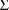
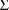

is fixed to 0, while intraindividual variability appears to
exist in the data. Moreover, the Simulation Step is not
implemented.
is fixed to 0, while intraindividual variability appears to
exist in the data. Moreover, the Simulation Step is not
implemented.The data records are checked for three possible errors. Each error generates a message given below.
A) MDV DATA ITEM FOR DATA REC NO. n IS INAPPROPRIATE
Explanation: The MDV data item in data record no. n is neither 0 nor 1.
System Action: Program terminates when encountering first such record.
B) TOT. NO. OF OBSERVATIONS IN
INDIVIDUAL REC NO. n
(IN INDIVIDUAL REC ORDERING) EXCEEDS 50
Explanation: The maximum number of observation records allowed in any individual record is 50. Individual record no. n does not comply with this limitation.
System Action: Program terminates when encountering first such record.
User Response: If there are important reasons for using more than 50 observation records in an individual record, the limit of 50 may be increased; see NONMEM Users Guide, Part III. This will entail recompiling parts of NONMEM. Execution time increases rapidly with the number of observation records per individual record.
C) WARNING: NO. OF OBS RECS IN
INDIVIDUAL REC NO. n
(IN INDIVIDUAL REC ORDERING) EXCEEDS ONE
WHILE INITIAL ESTIMATE OF WITHIN INDIVIDUAL VARIANCE IS
ZERO
Explanation: The initial
estimate of
is fixed to 0, while intraindividual variability appears to
exist in the data. Moreover, the Simulation Step is not
implemented.
System Action: Continue processing. Message is issued only with the first five individual records in which the number of observation records exceeds one.
User Response: If it is not
intended that the number of observation records in
individual record no. n should exceed one, then correct the
data set. If it is not intended that the initial estimate of
 should be 0, then check the initial estimate. There can be
circumstances where the intent is to have multiple
observations in individual records and to fix
should be 0, then check the initial estimate. There can be
circumstances where the intent is to have multiple
observations in individual records and to fix
 to 0. In these circumstances the random intraindividual
effects in the model have no actual effect on the data since

is 0 and so their values are constant. However, another way
to arrange that random intraindividual effects have no
effect is to eliminate them from the model. This is
accomplished by placing a 0 in field 3 of the initial
STRUCTURE record and by omitting all control records
pertaining to
to 0. In these circumstances the random intraindividual
effects in the model have no actual effect on the data since

is 0 and so their values are constant. However, another way
to arrange that random intraindividual effects have no
effect is to eliminate them from the model. This is
accomplished by placing a 0 in field 3 of the initial
STRUCTURE record and by omitting all control records
pertaining to
 .
.
Each control record is checked for many possible errors, such as there being an integer in a control record outside the permitted range, or there being a sort code in a TABLE record which appears more than once in the record. If an error is found in a control record, a self-explanatory error message is printed that directs the user to examine this record, and sometimes the particular field(s) containing the error. One control record after another is checked, and when the first control record (or combination of control records) with an error is found, NONMEM issues the appropriate error message and terminates. Therefore, subsequent control records with errors may not be identified until a subsequent NONMEM run.
Besides one possible error message from the Estimation Step, there are the three lines of output that always appear and that describe the nature of the termination of the minimization search. In addition, with the default ELS objective function a certain pattern of output indicates that with the initial parameter estimate, the estimated variance-covariance matrix of some individual’s set of observations is algorithmically singular. This pattern can also occur with a user-specified objective function when with the initial parameter estimate the user-supplied subprogram CONTR issues return code 1. (See NONMEM Users Guide II.) The pattern consists of a) termination of the search after the second iteration due to rounding errors dominating, b) an exceedingly large value of the objective function at the end of the 0th, 1st, and 2nd iterations, c) zero gradients (across all STP) at these three iterations, d) asterisks for the minimum value of the objective function, and e) a final estimate equalling the initial estimate. In this case user response should be to check i) that a suitable model has been chosen for the data, ii) for programming errors in PRED, iii) that reasonable initial estimates have been specified, iv) for mistakes in the data set. When the Estimation Step is not implemented, a pattern consisting of asterisks for the minimum value of the objective function should also prompt the same user response.
The error message from the Estimation Step is:
A) PROGRAM TERMINATED BY OBJ,
ERROR IN CONTR
WITH INDIVIDUAL n (IN INDIVIDUAL RECORD ORDERING)
RETURN CODE m
Explanation: CONTR is the
user-supplied subprogram for computing the contribution made
to the objective function from a given individual’s
data. It has encountered an error with individual n, and it
has issued a return code
 .
.
System Action: Program terminates.
User Response: Response should be appropriate for return code m.
The following error messages from the Covariance Step either indicate the reasons why various anticipated output is omitted from the Covariance Step or give a warning. The system action in each case is to continue processing. Reference is made to the R and S matrices. These matrices, computed in the Covariance Step, are described in NONMEM Users Guide, Part II. The R matrix is a numerical approximation to the hessian matrix of the objective function evaluated at the final estimate. As such, it is desireable that it be nonsingular and positive semidefinite. If it is not, then the covariance matrix may not be obtainable. If the S matrix is singular, then the inverse covariance matrix may not be obtainable.
A) R MATRIX UNOBTAINABLE
B) S MATRIX UNOBTAINABLE
C) R MATRIX ALGORITHMICALLY SINGULAR
D) R MATRIX ALGORITHMICALLY
SINGULAR
AND ALGORITHMICALLY NON-POSITIVE SEMIDEFINITE
E) R MATRIX ALGORITHMICALLY
NON-POSITIVE SEMIDEFINITE
BUT NONSINGULAR
F) S MATRIX ALGORITHMICALLY SINGULAR
G) PSEUDO INVERSE OF S MATRIX UNOBTAINABLE
H) PSEUDO INVERSE OF COVARIANCE MATRIX UNOBTAINABLE
I) EIGENVALUES NO. n AND GREATER UNOBTAINABLE
When messages A and B occur, they are accompanied by the messages:
J) ERROR RMATX-n m
K) ERROR SMATX-n m
respectively. These two messages are not explained here. If message C occurs, the objective function could be flat over some part of the parameter space that includes the final estimate. If message D or E occurs, the final estimate is not a local minimum. A situation giving rise to one of the above messages may also give rise to one of the following messages which indicate that certain output is being ommitted or indicates that surrogate output is generated.
L) COVARIANCE MATRIX UNOBTAINABLE
M) INVERSE COVARIANCE MATRIX UNOBTAINABLE
N) COVARIANCE MATRIX SET EQUAL TO INVERSE OF R MATRIX
O) COVARIANCE MATRIX SET EQUAL TO INVERSE OF S MATRIX
P) INVERSE OF COVARIANCE MATRIX SET EQUAL TO R MATRIX
Q) INVERSE OF COVARIANCE MATRIX SET EQUAL TO S MATRIX
If the covariance matrix is unobtainable, so are the standard errors and the correlation matrix.
In addition to messages A-Q, these two messages can occur together:
R) PROGRAM TERMINATED BY OBJ,
ERROR IN ELS
VAR-COV WITH INDIVIDUAL n (IN INDIVIDUAL RECORD ORDERING)
ESTIMATED TO BE ALGORITHMICALLY SINGULAR
S) MESSAGE ISSUED FROM COVARIANCE STEP
Explanation: With the final parameter estimate, the estimated variance-covariance matrix of the observations from individual n is algorithmically singular.
System Action: Program terminates.
User Response: The error can occur only when the final estimate is the initial estimate and only when either the Covariance Step is unconditionally implemented or a MSF is used. Respond with i-iv, as indicated in section G.3. If MSF is used, check that it is the correct one.
These two messages may also occur together:
T) PROGRAM TERMINATED BY OBJ,
ERROR IN CONTR
WITH INDIVIDUAL n (IN INDIVIDUAL RECORD ORDERING)
RETURN CODE m
U) MESSAGE ISSUED FROM COVARIANCE STEP
Explanation: CONTR is the user-supplied subprogram for computing the contribution made to the objective function from a given individual’s data. It has encountered a fatal error with individual n, and it has issued a return code m.
System Action: Program terminates.
User Response: The error can occur only when the final estimate is the initial estimate and only when either the Covariance Step is unconditionally implemented or a MSF is used. Respond with i-iv, as indicated in section G.3. If MSF is used, check that it is the correct one. Response should be appropriate for return code m.
These two messages may can occur together:
A) PROGRAM TERMINATED BY PRRES,
ERROR IN ELS
VAR-COV WITH INDIVIDUAL n (IN INDIVIDUAL RECORD ORDERING)
ESTIMATED TO BE ALGORITHMICALLY SINGULAR
B) MESSAGE ISSUED FROM x STEP
Explanation: With the final parameter estimate, the estimated variance-covariance matrix of the observations from individual n is algorithmically singular. In message B the x stands for either TABLE or SCATTERPLOT, whichever applies.
System Action: Program terminates.
User Response: The error can occur only when the final estimate is the initial estimate and only when the Estimation Step is either unconditionally implemented or not implemented. Respond with i-iv, as indicated in section G.3.
These two messages may also occur together:
C) PROGRAM TERMINATED BY PRRES,
ERROR IN CONTR
WITH INDIVIDUAL n (IN INDIVIDUAL RECORD ORDERING)
RETURN CODE m
D) MESSAGE ISSUED FROM x STEP
Explanation: CONTR is the user-supplied subprogram for computing the contribution made to the objective function from a given individual’s data. It has encountered a fatal error with individual n, and it has issued a return code m. In message D the x stands for either TABLE or SCATTERPLOT, whichever applies.
System Action: Program terminates.
User Response: The error can occur only when the final estimate is the initial estimate and only when the Estimation Step is either unconditionally implemented or not implemented. Respond with i-iv, as indicated in section G.3. Response should be appropriate for return code m.
There is another possible message from the Scatterplot Step:
E) RANGE FOR x is ZERO
Explanation: The data items labeled x are to be scatterplotted, but they are all equal.
System Action: Replace the scatterplot with this message.
These two messages may can occur together:
A) PROGRAM TERMINATED BY PRRES,
ERROR IN ELS
VAR-COV WITH INDIVIDUAL n (IN INDIVIDUAL RECORD ORDERING)
ESTIMATED TO BE ALGORITHMICALLY SINGULAR
B) MESSAGE ISSUED WHEN CONPAR CALLED WITH ICALL=3
Explanation: With the final parameter estimate, the estimated variance-covariance matrix of the observations from individual n is algorithmically singular. In message B CONPAR refers to the user-supplied subprogram for computing condensed parameter values.
System Action: Program terminates.
User Response: The error can occur only when the final estimate is the initial estimate and only when the Estimation Step is either unconditionally implemented or not implemented. Respond with i-iv, as indicated in section G.3.
These two messages may also occur together:
C) PROGRAM TERMINATED BY PRRES,
ERROR IN CONTR
WITH INDIVIDUAL n (IN INDIVIDUAL RECORD ORDERING)
RETURN CODE m
D) MESSAGE ISSUED WHEN CONPAR CALLED WITH ICALL=3
Explanation: CONTR is the user-supplied subprogram for computing the contribution made to the objective function from a given individual’s data. It has encountered a fatal error with individual n, and it has issued a return code m. In message D CONPAR refers to the user-supplied subprogram for computing condensed parameter values.
System Action: Program terminates.
User Response: The error can occur only when the final estimate is the initial estimate and only when the Estimation Step is either unconditionally implemented or not implemented. Respond with i-iv, as indicated in section G.3. Response should be appropriate for return code m.